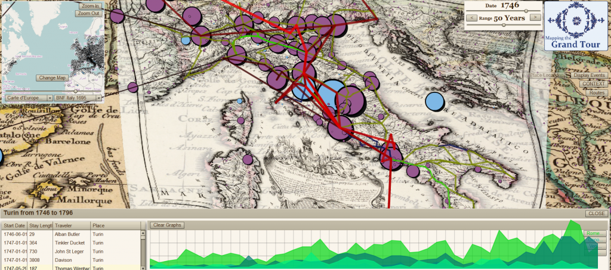
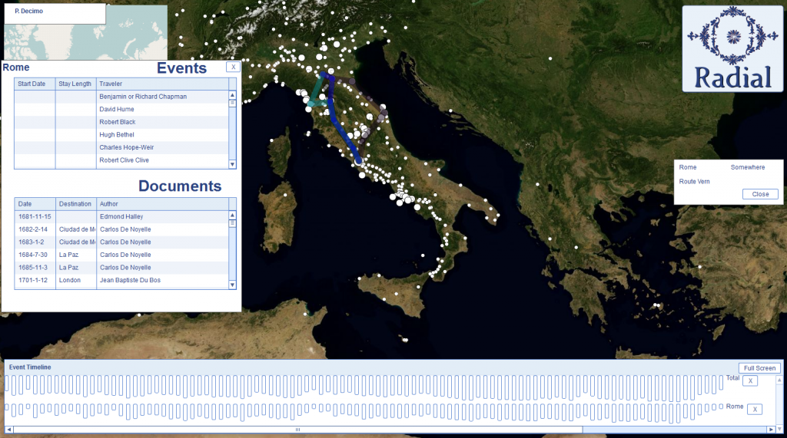
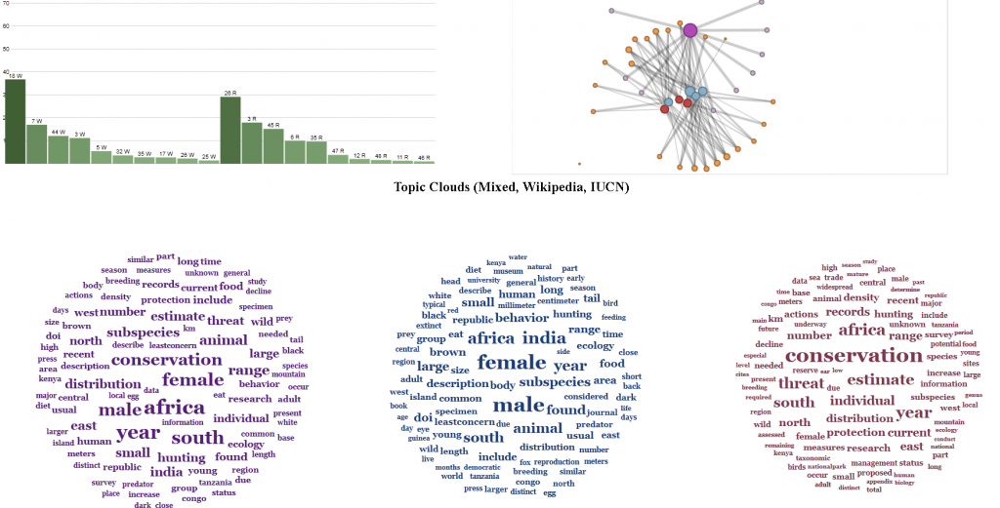

I’ve been exposed to a lot of exciting digital humanities research since I came to Stanford, both in the formal projects I’ve been brought in on to support and in consultation with and exposure to ongoing research by various individual faculty and groups. But in all that time, I haven’t created a scholarly digital object (SDO)1 at Stanford, and I’m becoming more keenly aware of it as we get close to finally rectifying that situation with the upcoming release of the recent work done on Imperial Roman transportation networks.
That isn’t to say I haven’t produced anything that qualifies as digital scholarly media. Along with Authorial London, I’ve produced a number of different interfaces and objects for the exploration of data by humanities scholars using a variety of traditional methods of data modeling and analysis. In collaboration with Nicole Coleman and the Mapping the Republic of Letters project, I built a rather feature-rich (but sadly UX-deficient) Flex-based utility known as ConTEXT.






Still, I wouldn’t consider any of these to be SDOs because none of them was formally published. In that way I distinguish between the productive and, hopefully, valuable work I contributed to on these projects and something like the last (and only other) SDO I helped create: the Digital Gazetteer of the Song Dynasty (DGSD), which I built with Ruth Mostern while I was a graduate student at UC Merced.
It seems rather poor sport to claim that a raw database, released with a few screenshots of the data being represented statistically in spatial or plot form, is somehow a higher class citizen than the interactive, complex and visually more interesting (and hopefully more sophisticated) material referenced above. Thankfully, I’m not claiming that. But I do think that a Scholarly Digital Object (and hear I hope you’ll excuse me for not holding on to my still cumbersome and unfamiliar acronym) is something that can be peer reviewed, even if part of that review is to say, “You should have done more than release a raw .sql dump.” Amenability to being peer-reviewed is the most important trait of an SDO, but I think there’s more to it than that, so here’s my shortlist.
A Scholarly Digital Object must be:
1. A set of digital material that can be effectively constrained in its description.
A Scholarly Digital Object is not an ongoing project or tool, though it may have come from one and incorporate the other. I find it strange that when it comes to the Digital Humanities we can name many projects and tools but very few products.
2. Available for Peer Review of Technical, Theoretical and Substantive Elements
You cannot expect meaningful review of an SDO without making available the code that it uses to represent and model its elements, as well as the data itself and the theoretical description of how it was fashioned. Moreso, making available does not simply mean releasing source code or datasets but rather facilitating the review of the most sophisticated elements by building features that expose those elements. This is a failing in the release of the DGSD, which requires too much technical expertise to get access to the data–a failing I hope to eventually rectify by embedding the database in an interface that provides the scholarly reviewer with more opportunity to examine its contents and structure in relation to the claims made using that data. This also means, as Karl Grossner has been demonstrating to my unlearned eyes, that principles of UX/UI design are fundamental to the creation and definition of SDOs.
3. More than an archive or collection.
Digital translations of traditional texts and datasets are critical to the advancement of digital humanities scholarship, as are large and well-described archives of such material. But an SDO is not a dataset, and in fact the portions that are data might be so dramatically transformed as to be difficult to use by other scholars in later work. This is the most difficult distinction for me to make, and perhaps that’s a sign that I’m mistaken in this, but a tool coupled with an archive is still not an argument. Even the most intuitive tool for browsing the best-curated archive is not something that is reviewed based on the merits of its claims, but rather the efficacy of its implementation. The attempt to distinguish the SDO from the archive is not an attempt to denigrate the latter, but rather to expose the former to adequate peer review.
4. Published
With names taking credit for its contents in a formal and complete manner. There is a bit of an informal economy going on in the digital humanities, and it is maintained through informal mechanisms that assign credit for large and informal structures in vague and informal ways. I, for one, do not publish much in the traditional manner, and short of general praise by my colleagues and performance reviews and a string of conference presentations with cool-sounding titles, would not have substantial markers of my success in this field without formally defined products of my work.
5. Cool
Okay, not really, I just wanted my list to go to five.
In the coming weeks, I expect to bore everyone to death with a variety of presentations and posts describing a particular example of a Scholarly Digital Object that strives to embody the five requirements outlined above.
1Which would make a great file extension and which I’ve referred to earlier as in the category of digital scholarly media or, as has become more prevalent, digital scholarly communication.